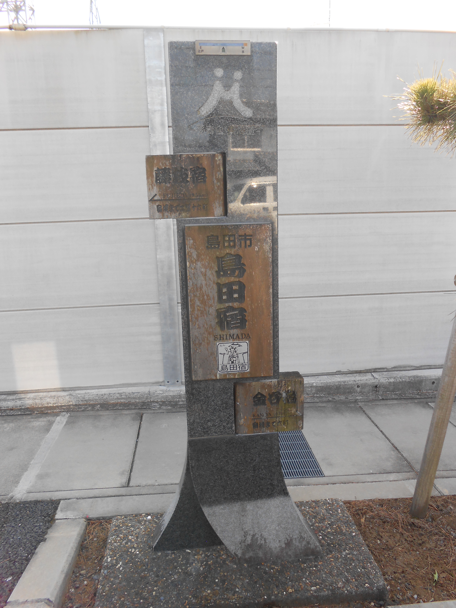
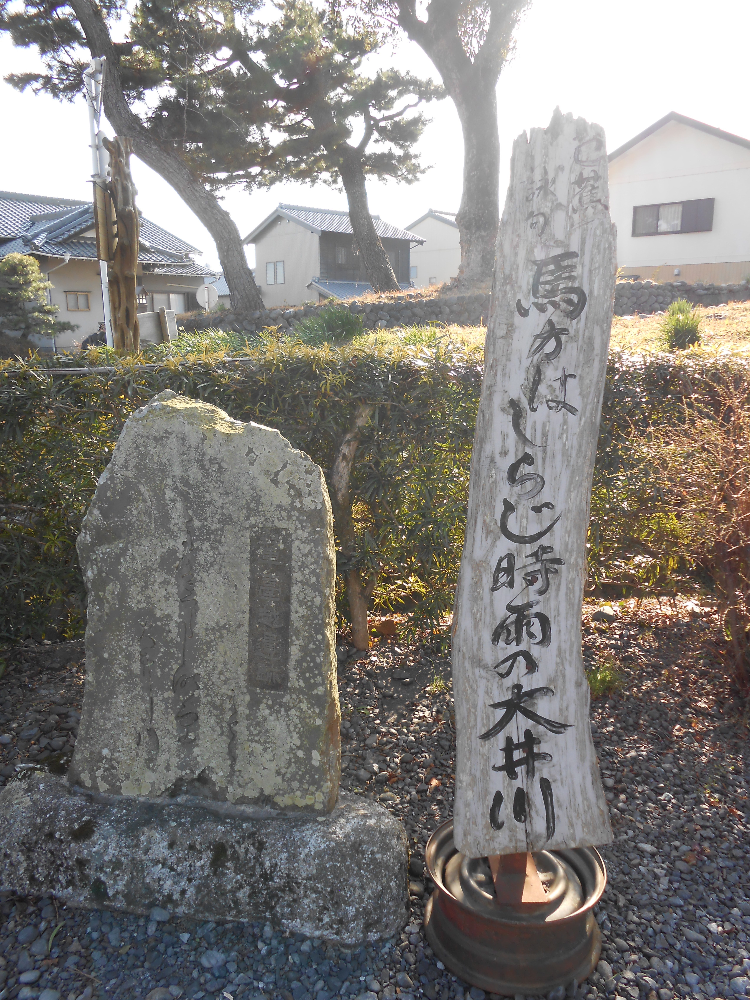
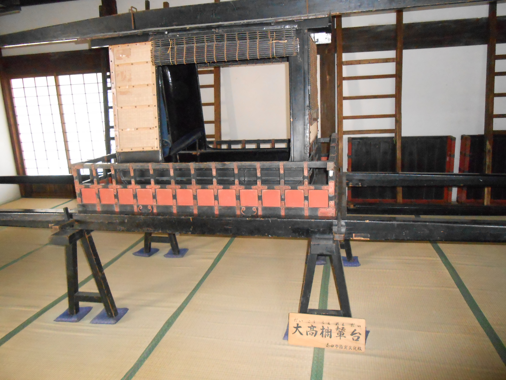
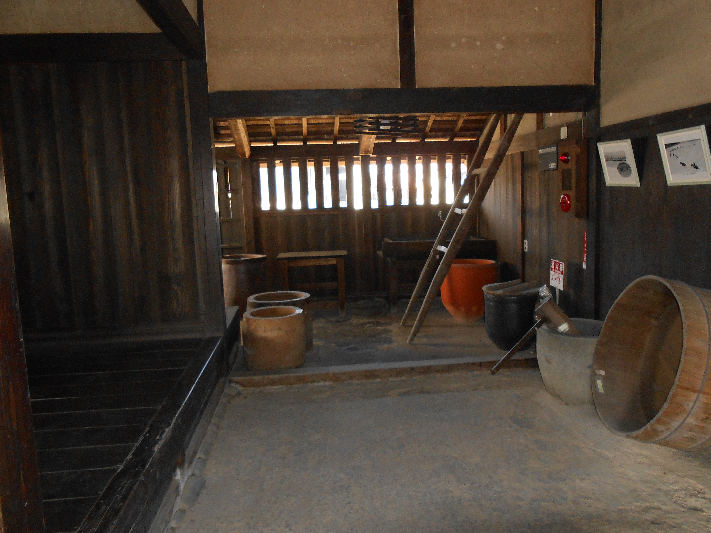
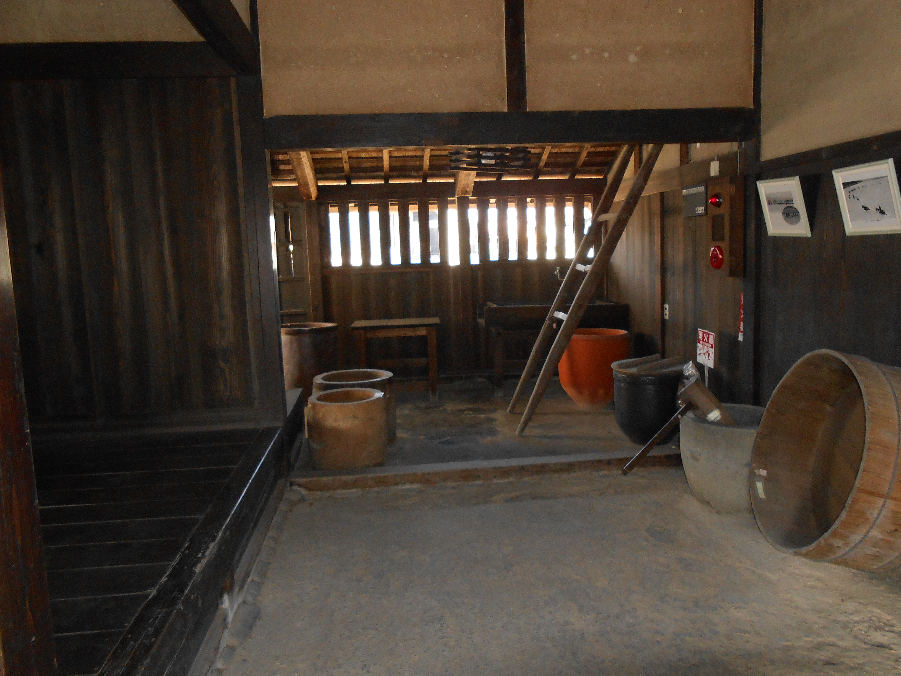
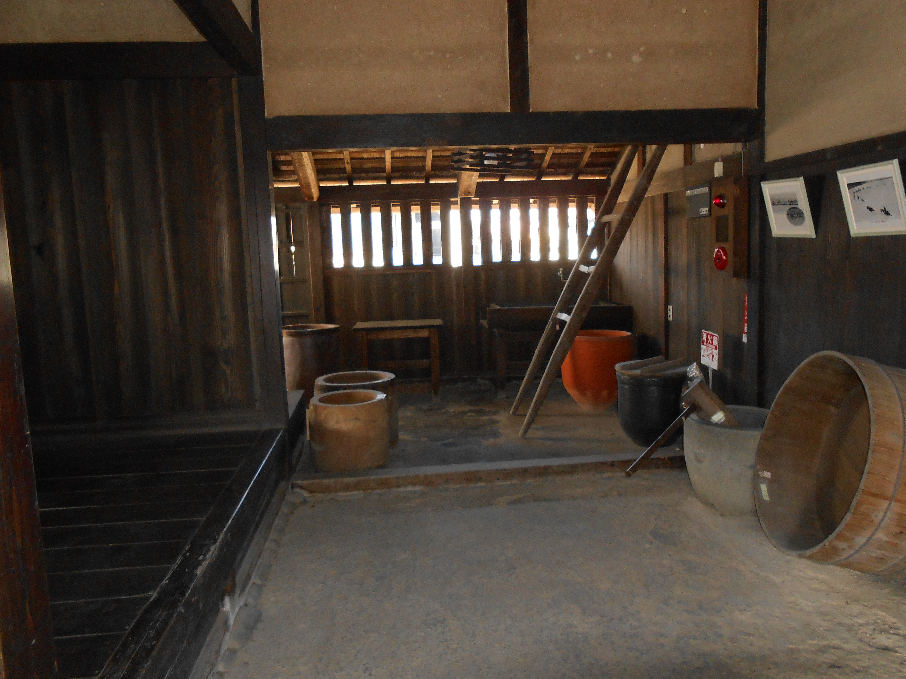
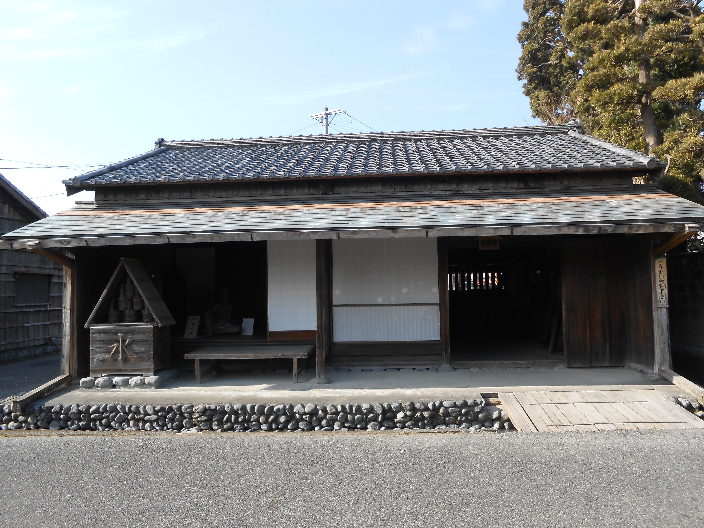
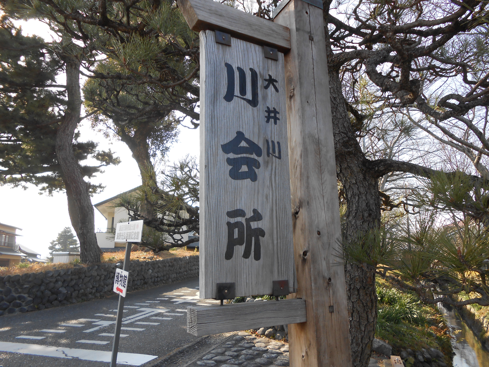
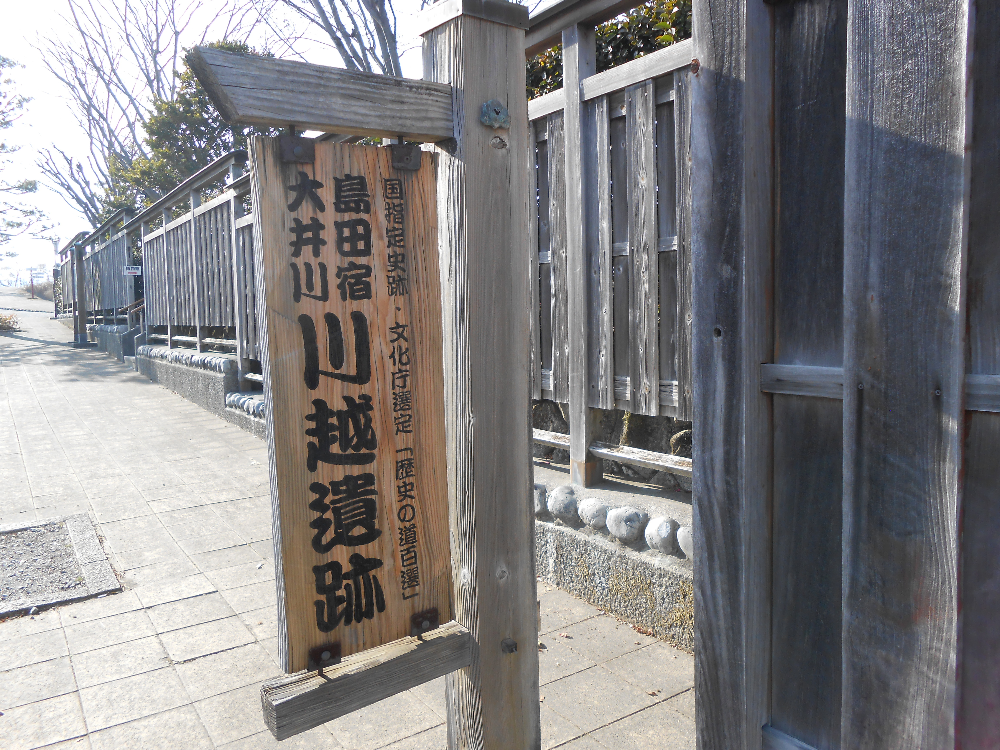

発見！こんな歴史があった島田市

松尾芭蕉も訪れた島田宿
昔、島田に流れる大きな川である大井川に橋をかけることはできず、蓬莱橋はありませんでした。そのため川を渡る、つまり川越しをする際には川越人足に運んでもらう必要がありましたが、川の水が増えれば川留めとなり渡ることはできません。そんな時に人々が泊まったのが東海道の中にある島田宿であり、川留めによって島田宿は繁盛しました。

また、かの有名な松尾芭蕉も何泊もしたと言われています。その証拠に芭蕉は「箱根八里は馬でも越すが、越すに越されぬ大井川」という句を残しており、大井川がどれだけ大変な川であったかが予想できるとともに実際に芭蕉がいたということがわかります。

そしてそんな島田宿はいまでも建物がいくつか残っていたり、連台が展示されていたりと当時の島田宿を感じることができます。

 


ちなみに、川越には川越人足の肩に乗る「肩車越し」と連台に乗る「連台越し」がありましたが一般的には連台越しが多く、「大井川の連台越し」として知られていました。連台にも種類があり、作りがしっかりしているものほど身分の高い人が乗り、その分台の価値に見合った数の台札や川越人足の人数分の川札が必要となりました。[4]



参考文献
- [4]島田市教育委員会（平成4年）大井川の川越.